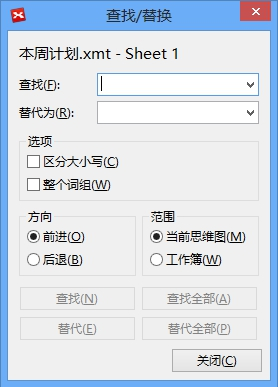
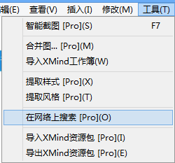
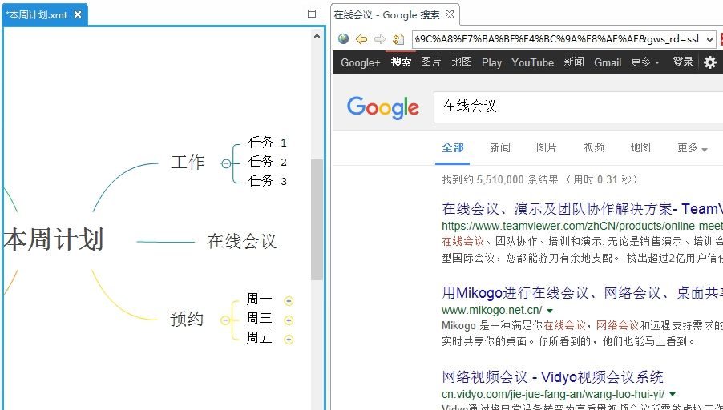
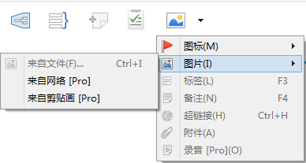
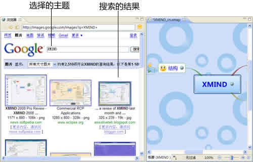
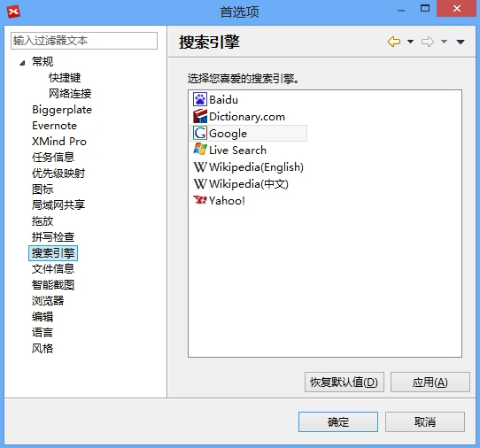

搜索
XMIND中您可以一如既往地轻松使用查找/替换功能。方法如下:
- 打开图；
-
按照下列方法打开查找/替换对话框:
- 在菜单栏选择“编辑 > 查找/替换”。
- 或者使用快捷键“Ctrl+F”（Mac用户请使用 Command+F）。
- 您可以对思维图中的任何文字进行查找/替换。
查找/替换对话框

在线搜索
使用XMIND，您还可以在线搜索文字以及图片。方法如下:
按照下列步骤在线搜索文字:
- 选中一个或者多个主题；
- 在菜单栏点击“工具 - 在网络上搜索”；
- XMIND会打开浏览器视图，并显示搜索结果；
- 您可以直接在浏览器视图中选择需要的文字或者URL链接，直接拖拽放入思维图中。


按照下列步骤在线搜索图片:
- 选中主题；
-
按照下列方法之一开始在线图片搜索:
- 在菜单栏选择“插入 > 图片 > 来自网络。
- 点击工具栏上的图片按钮，在下拉菜单中选择“从Web” 
- 打开鼠标右键菜单，选择“图片 > 从Web”。
- 在XMIND的浏览器视图中选择需要的图片，拖放至思维图中即可添加。
- 您可以将一个图片拖放至已经存在的图片，或者至空白处作为一个新的自由主题。

注意:
- 在线搜索的过程中，主题的内容将会作为搜索的关键词。
-
您可以按照下列步骤调整您的搜索引擎:
- 在菜单栏选择“编辑 > 首选项”；
- 选择“搜索引擎”；
- 选择您需要的搜索引擎；

您可能还对下列内容感兴趣: